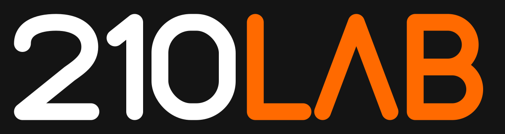

산책 준비 중…
Map data © OpenStreetMap contributors (ODbL) · 지도 축척 0.3배 · 해안선·부두 육지는 OSM(map.osm)
연출(실제와 다름): 건물 높이·나무·관목·가로등·야생화·풀포기·먼 풍경·부산항대교(북항대교) 크기·거리·다리 난간·조명·아치·물고기·상어·항만 크레인·배·유리 바닥 데크·달·별·돗자리
WASD/방향키 이동 · 바닥 클릭 이동